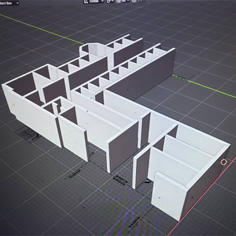
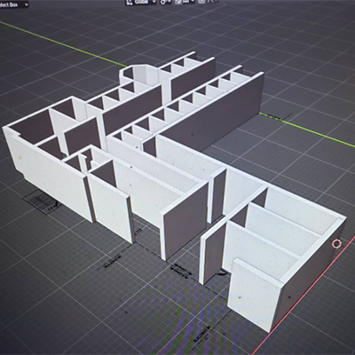

- PRACTICAL TIME TRAVEL: THE RIDGES -
Practical Time Travel: The Ridges is an immersive user agency-centered experience providing facts about the history of the Athens State Hospital;
some of the people who worked and lived there; the architecture; and industries related to the site.
Through virtual reality, participants can learn historic facts, about motivations of those that lived in the past,
and how multiple elements of life and culture are connected through activities involving trial and error, exploration, and puzzle-solving.
For this project, I researched the site through books, news articles, postcards, floorplans, visits, etc. I created 3D models of the exterior and interior of the building using provided floorplans, recent photogrammatry, found postcards and urban exploration photos.
My favorite asset to create was the Pony Ride Rocker that was chosen as a primary object for our museum studies program's exhibit, orginally slated to take place at the Ridges. I found a pattern from the 1950s, scanned it, and used it with Adobe Illustrator and Blender to create the model, Substance Painter to make the texture, and Unity to piece it together. One of the planned activities of the expanded experience involves finding and piecing together the toy, finding facts along the way. The real version was built by a patient and is part of a Southeast Ohio History Center collection.
The biggest challenge of this project was optimizing it so it did not bog down the experience in VR and finding ways to climb the steep stairs to the upper levels, built to the original plans.


 
